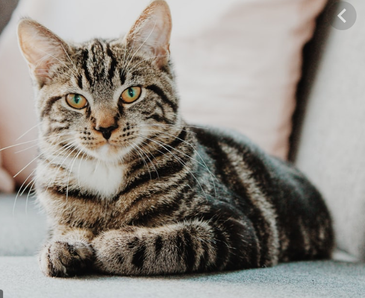

My name is Mackenzie Totten and I am a senior at the University of Missouri Studying Convergence Journalism and emerging media. Welcome to my website for J4502!
I am skilled in Adobe Auditon, Adobe InDesign, Adobe Photoshop, and Adobe Premiere. I am currently learning to write HTML and CSS for my multimedia planning and design class.
I am interested in working in the production side of film and television in Los, Angeles after graduation.
I am currently working toward a Bachelor's in Journalism from the University of Missouri in Columbia. I will graduate in May of 2020 with a B.J. and a minor in history.
Mackenzie is a reporter for the Missourian.
here is my old index.
this picture will take you to my email.
this picture will take you to my twitter.
